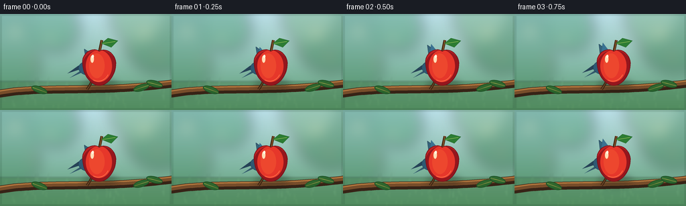
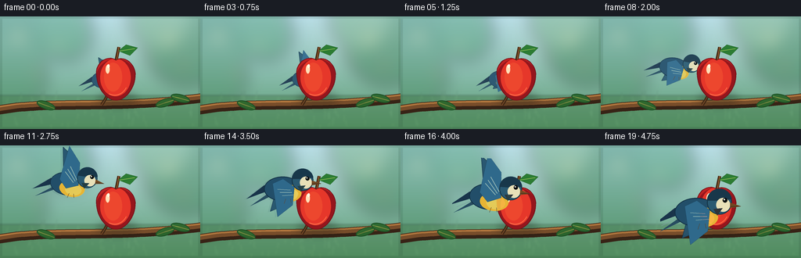

CODING AGENTS AS PIXEL WORLD MODELS
traex/GPT-5.6-Sol · dynamic_spatial_relationship_0038
点击播放 · 原生 RGB 像素
逐轮保存的候选
回放视频、检查图与代码变化。
每份候选均可单独播放。实际图片检查记录在下方工具轨迹中。
候选 01播放与检查图
点击播放 · 原生 RGB 像素


展开代码变化
--- 上一保存版本
+++ 本次保存版本
@@ -0,0 +1,243 @@
+from pathlib import Path
+import math
+import numpy as np
+from PIL import Image, ImageDraw, ImageFilter
+import artifact_io
+
+W, H, N = 256, 144, 20
+SS = 4
+
+
+def smoothstep(x):
+ x = max(0.0, min(1.0, x))
+ return x*x*(3-2*x)
+
+
+def bezier(p0, p1, p2, p3, t):
+ u = 1-t
+ return (u**3*p0[0] + 3*u*u*t*p1[0] + 3*u*t*t*p2[0] + t**3*p3[0],
+ u**3*p0[1] + 3*u*u*t*p1[1] + 3*u*t*t*p2[1] + t**3*p3[1])
+
+
+def scpt(p):
+ return tuple(int(round(v*SS)) for v in p)
+
+
+def make_background(frame_i):
+ # Soft sunlit orchard with fixed camera and subtle natural shimmer.
+ hh, ww = H*SS, W*SS
+ y = np.linspace(0, 1, hh)[:, None, None]
+ top = np.array([181, 222, 235], dtype=float)[None,None,:]
+ bot = np.array([91, 154, 111], dtype=float)[None,None,:]
+ arr = top*(1-y) + bot*y
+ arr = np.broadcast_to(arr, (hh, ww, 3)).copy()
+ # warm patch of sunlight in the upper right
+ xx, yy = np.meshgrid(np.arange(ww), np.arange(hh))
+ glow = np.exp(-(((xx-218*SS)/(95*SS))**2 + ((yy-18*SS)/(55*SS))**2))[:,:,None]
+ arr = arr*(1-0.13*glow) + np.array([255,239,181])[None,None,:]*(0.13*glow)
+ bg = Image.fromarray(np.uint8(np.clip(arr,0,255)), 'RGB').convert('RGBA')
+
+ # blurred canopy and fruit bokeh
+ blur = Image.new('RGBA', bg.size, (0,0,0,0)); d = ImageDraw.Draw(blur)
+ foliage = [(-15,22,60,(42,115,67,105)), (38,15,43,(35,111,62,90)),
+ (84,22,35,(38,125,66,85)), (238,34,54,(34,109,61,100)),
+ (203,3,39,(64,137,74,75)), (13,72,47,(48,119,71,75))]
+ for x0,y0,r,c in foliage:
+ d.ellipse((int((x0-r)*SS),int((y0-r)*SS),int((x0+r)*SS),int((y0+r)*SS)), fill=c)
+ for x0,y0,r,c in [(23,27,7,(255,245,184,115)), (74,38,5,(245,233,167,100)),
+ (216,28,7,(255,238,169,125)), (235,64,4,(220,72,51,95)),
+ (49,72,4,(231,79,55,80)), (191,54,3,(249,223,139,95))]:
+ d.ellipse(((x0-r)*SS,(y0-r)*SS,(x0+r)*SS,(y0+r)*SS), fill=c)
+ blur = blur.filter(ImageFilter.GaussianBlur(10*SS))
+ bg = Image.alpha_composite(bg, blur)
+
+ # distant grass, lightly textured
+ detail = Image.new('RGBA', bg.size, (0,0,0,0)); d = ImageDraw.Draw(detail)
+ d.rectangle((0,101*SS,ww,hh), fill=(66,119,71,105))
+ rng = np.random.default_rng(2057)
+ for _ in range(85):
+ x = int(rng.uniform(0,W)*SS); y0 = int(rng.uniform(105,146)*SS)
+ leng = int(rng.uniform(3,11)*SS)
+ col = (105,158,82,int(rng.uniform(35,90)))
+ d.line((x,y0,x+int(rng.uniform(-2,2)*SS),y0-leng), fill=col, width=max(1,SS//2))
+ detail = detail.filter(ImageFilter.GaussianBlur(1.2*SS))
+ bg = Image.alpha_composite(bg, detail)
+
+ # gentle vignette
+ v = Image.new('RGBA', bg.size, (0,0,0,0)); vd = ImageDraw.Draw(v)
+ vd.rectangle((0,0,ww,hh), outline=(17,44,30,28), width=3*SS)
+ return Image.alpha_composite(bg,v)
+
+
+def draw_branch(im):
+ dr = ImageDraw.Draw(im, 'RGBA')
+ def curve(a,b,c,d,n=45):
+ return [scpt(bezier(a,b,c,d,k/(n-1))) for k in range(n)]
+ pts = curve((-13,122),(54,105),(151,121),(271,102))
+ dr.line(pts, fill=(55,35,22,255), width=12*SS, joint='curve')
+ dr.line([(x,y-2*SS) for x,y in pts], fill=(119,77,42,255), width=7*SS, joint='curve')
+ dr.line([(x,y-4*SS) for x,y in pts], fill=(178,119,62,150), width=2*SS)
+ # twig supporting the apple
+ twig = curve((130,113),(137,102),(142,92),(146,86),20)
+ dr.line(twig, fill=(73,43,23,255), width=4*SS)
+ dr.line(twig, fill=(151,93,47,190), width=SS)
+ # a few foreground leaves on the branch
+ for cx,cy,ang in [(57,109,-20),(209,106,18),(229,101,-15)]:
+ leaf = Image.new('RGBA',(30*SS,18*SS),(0,0,0,0)); ld=ImageDraw.Draw(leaf)
+ ld.ellipse((2*SS,4*SS,27*SS,14*SS), fill=(41,104,47,235), outline=(27,78,36,255), width=SS)
+ ld.line((4*SS,9*SS,26*SS,9*SS), fill=(130,170,75,170), width=SS)
+ leaf=leaf.rotate(ang, resample=Image.Resampling.BICUBIC, expand=True)
+ im.alpha_composite(leaf,(int((cx-15)*SS),int((cy-9)*SS)))
+
+
+def apple_polygon(cx, cy):
+ segs = [
+ ((cx,cy-22),(cx-8,cy-29),(cx-26,cy-21),(cx-25,cy-5)),
+ ((cx-25,cy-5),(cx-25,cy+13),(cx-12,cy+29),(cx,cy+29)),
+ ((cx,cy+29),(cx+13,cy+29),(cx+25,cy+13),(cx+25,cy-5)),
+ ((cx+25,cy-5),(cx+23,cy-21),(cx+8,cy-28),(cx,cy-22)),
+ ]
+ out=[]
+ for p0,p1,p2,p3 in segs:
+ out += [bezier(p0,p1,p2,p3,k/15) for k in range(15)]
+ return [scpt(p) for p in out]
+
+
+def draw_apple(im, cx=148, cy=78):
+ # contact shadow behind fruit
+ sh = Image.new('RGBA', im.size, (0,0,0,0)); sd=ImageDraw.Draw(sh)
+ sd.ellipse(((cx-24)*SS,(cy+19)*SS,(cx+28)*SS,(cy+37)*SS), fill=(25,31,19,75))
+ sh=sh.filter(ImageFilter.GaussianBlur(5*SS)); im.alpha_composite(sh)
+ dr=ImageDraw.Draw(im,'RGBA')
+ # stem and fresh leaf, all part of the fixed apple landmark
+ dr.line((cx*SS,(cy-20)*SS,(cx+4)*SS,(cy-39)*SS), fill=(72,42,22,255), width=4*SS)
+ dr.line(((cx+1)*SS,(cy-22)*SS,(cx+4)*SS,(cy-39)*SS), fill=(158,101,49,220), width=SS)
+ leaf=[(cx+3,cy-34),(cx+13,cy-42),(cx+28,cy-38),(cx+18,cy-28)]
+ dr.polygon([scpt(p) for p in leaf], fill=(44,124,51,255), outline=(26,82,36,255))
+ dr.line(scpt((cx+5,cy-34))+scpt((cx+24,cy-37)), fill=(139,183,81,220), width=SS)
+ poly=apple_polygon(cx,cy)
+ dr.polygon(poly, fill=(190,35,36,255))
+ # red edge shading and golden-red central illumination
+ shade=Image.new('RGBA',im.size,(0,0,0,0)); s=ImageDraw.Draw(shade)
+ s.ellipse(((cx-26)*SS,(cy-24)*SS,(cx+27)*SS,(cy+30)*SS), fill=(94,5,19,110))
+ s.ellipse(((cx-20)*SS,(cy-24)*SS,(cx+19)*SS,(cy+24)*SS), fill=(233,56,42,240))
+ s.ellipse(((cx-15)*SS,(cy-19)*SS,(cx+8)*SS,(cy+18)*SS), fill=(249,80,48,205))
+ # Restrict the light/shading to apple mask
+ mask=Image.new('L',im.size,0); ImageDraw.Draw(mask).polygon(poly,fill=255)
+ shade.putalpha(Image.composite(shade.getchannel('A'),Image.new('L',im.size,0),mask))
+ im.alpha_composite(shade)
+ dr=ImageDraw.Draw(im,'RGBA')
+ # crisp outline and glossy highlights
+ dr.line(poly+[poly[0]], fill=(119,18,26,210), width=SS)
+ dr.ellipse(((cx-13)*SS,(cy-16)*SS,(cx-8)*SS,(cy-5)*SS), fill=(255,222,183,185))
+ dr.ellipse(((cx-11)*SS,(cy-17)*SS,(cx-8)*SS,(cy-12)*SS), fill=(255,249,225,225))
+ dr.arc(((cx-19)*SS,(cy-17)*SS,(cx+16)*SS,(cy+23)*SS),30,115,fill=(255,113,73,90),width=SS)
+
+
+def render_bird(scale, phase, tilt=0, behind=False):
+ # Hand-painted blue-and-gold songbird, facing right.
+ cw,ch=104,92
+ layer=Image.new('RGBA',(cw*SS,ch*SS),(0,0,0,0)); d=ImageDraw.Draw(layer,'RGBA')
+ ox,oy=48,43
+ def P(x,y): return (int((ox+x*scale)*SS),int((oy+y*scale)*SS))
+ def box(x0,y0,x1,y1): return (*P(x0,y0),*P(x1,y1))
+ # soft local aerial shadow (stronger when foreground)
+ # tail feathers
+ d.polygon([P(-20,8),P(-47,18),P(-25,1),P(-7,-1)], fill=(25,52,74,255))
+ d.polygon([P(-18,10),P(-42,27),P(-11,12),P(0,2)], fill=(39,76,96,255))
+ d.line([P(-39,20),P(-10,6)], fill=(121,157,157,170), width=max(1,int(scale*SS)))
+ # far wing changes silhouette through the flap cycle
+ flap=math.sin(phase)
+ if flap >= 0:
+ wing=[P(-8,-2),P(-14,-34-9*flap),P(2,-24-7*flap),P(12,1)]
+ else:
+ wing=[P(-8,0),P(-17,22-12*flap),P(4,18-7*flap),P(14,2)]
+ d.polygon(wing, fill=(36,82,109,240))
+ d.line(wing+[wing[0]], fill=(18,51,75,220), width=max(1,int(0.9*SS)))
+ # body outline
+ d.ellipse(box(-25,-10,22,21), fill=(34,78,105,255), outline=(18,48,68,255), width=max(1,int(scale*SS)))
+ # golden belly
+ d.ellipse(box(-12,0,22,22), fill=(230,180,52,255))
+ d.ellipse(box(-4,5,18,20), fill=(249,207,72,210))
+ # near wing and layered feathers
+ if flap >= 0:
+ near=[P(-13,1),P(-6,-31-15*flap),P(11,-16-9*flap),P(13,6),P(-3,12)]
+ else:
+ near=[P(-14,-1),P(-8,27-14*flap),P(11,18-8*flap),P(13,3),P(-1,-7)]
+ d.polygon(near, fill=(47,105,139,255), outline=(23,64,93,255))
+ # wing bars / individual feather cues
+ for j in range(3):
+ if flap >= 0:
+ d.line([P(-7+j*3,-10-j*4),P(6+j*2,3-j*2)], fill=(154,184,181,190), width=max(1,int(.8*SS)))
+ else:
+ d.line([P(-8+j*3,6+j*4),P(8+j*2,7+j*3)], fill=(154,184,181,190), width=max(1,int(.8*SS)))
+ # head, cap, cheek
+ d.ellipse(box(10,-18,37,8), fill=(42,89,113,255), outline=(18,49,66,255), width=max(1,int(scale*SS)))
+ d.pieslice(box(10,-20,37,6),180,353,fill=(24,55,74,255))
+ d.ellipse(box(20,-10,35,5), fill=(232,224,184,255))
+ # eye and catchlight
+ d.ellipse(box(27,-10,32,-5), fill=(8,13,15,255))
+ d.ellipse(box(28,-9,29.5,-7.5), fill=(255,255,244,255))
+ # beak
+ d.polygon([P(35,-5),P(47,-1),P(35,1)], fill=(113,72,35,255))
+ d.line([P(35,-1),P(46,-1)], fill=(48,37,25,255), width=max(1,int(.5*SS)))
+ # throat bib and tiny feet tucked in flight
+ d.polygon([P(17,2),P(27,1),P(21,9)], fill=(26,50,57,230))
+ d.line([P(2,18),P(0,24)],fill=(91,58,32,230),width=max(1,int(.7*SS)))
+ d.line([P(8,18),P(9,23)],fill=(91,58,32,230),width=max(1,int(.7*SS)))
+ if behind:
+ # slightly cooler distant light, without blurring the silhouette away
+ haze=Image.new('RGBA',layer.size,(170,211,216,20))
+ haze.putalpha(layer.getchannel('A').point(lambda a: int(a*.09)))
+ layer=Image.alpha_composite(layer,haze)
+ if abs(tilt)>0.1:
+ layer=layer.rotate(tilt,resample=Image.Resampling.BICUBIC,expand=True)
+ return layer
+
+
+def bird_state(i):
+ # Five readable opening frames behind; a clean arc around the apple; five closing frames in front.
+ if i <= 4:
+ wob = math.sin(i*0.9)
+ return (139 + .7*wob, 80 + .5*math.cos(i), .72, -2+wob, True, 0.5*i)
+ if i <= 14:
+ u=smoothstep((i-4)/10)
+ x,y=bezier((139,80),(91,76),(69,32),(111,53),u)
+ scale=.72 + .30*u
+ # body banks up then levels for the approach
+ tilt=-12*math.sin(math.pi*u)
+ return (x,y,scale,tilt, i<11, 1.25*i)
+ u=smoothstep((i-14)/5)
+ x,y=bezier((111,53),(124,57),(118,82),(128,82),u)
+ scale=1.02 + .16*u
+ tilt=-6*(1-u)
+ return (x,y,scale,tilt,False,1.25*i)
+
+
+def compose_frame(i):
+ im=make_background(i)
+ draw_branch(im)
+ x,y,s,tilt,behind,ph=bird_state(i)
+ bird=render_bird(s,ph,tilt,behind)
+ bx=int(x*SS-bird.width/2); by=int(y*SS-bird.height/2)
+ if behind:
+ im.alpha_composite(bird,(bx,by))
+ draw_apple(im)
+ else:
+ draw_apple(im)
+ # small translucent flight echo while rapidly moving, only away from final hold
+ if 5 <= i <= 15:
+ ghost=bird.copy(); ghost.putalpha(ghost.getchannel('A').point(lambda a:int(a*.08)))
+ im.alpha_composite(ghost,(bx-int(3*SS),by+int(1*SS)))
+ im.alpha_composite(bird,(bx,by))
+ # mild foreground light bloom, consistent photographic finish
+ rgb=im.convert('RGB').resize((W,H),Image.Resampling.LANCZOS)
+ return np.asarray(rgb,dtype=np.uint8)
+
+
+def main():
+ frames=np.stack([compose_frame(i) for i in range(N)],axis=0)
+ artifact_io.save(frames,Path(__file__).resolve().parent)
+
+if __name__=='__main__':
+ main()
可观测工具轨迹
实际执行的命令与返回图片。
命令 1exit 0
/bin/bash -lc "cat prompt.txt && printf '\\n---RULES---\\n' && cat GENERATION_RULES.md && printf '\\n---SPEC---\\n' && cat task_spec.json"
命令 2exit 0
/bin/bash -lc "find . -maxdepth 2 -type f -printf '%p\\n' | sort"
命令 3exit 0
/bin/bash -lc "which ffmpeg; which python3; python3 - <<'PY'
try:
import cv2; print('cv2',cv2.__version__)
except Exception as e: print('no cv2',e)
try:
import PIL; print('PIL',PIL.__version__)
except Exception as e: print('no PIL',e)
try:
import numpy; print('numpy',numpy.__version__)
except Exception as e: print('no np',e)
PY"命令 4exit 0
/bin/bash -lc 'cat artifact_io.py'
命令 5exit 0
/bin/bash -lc "cat > generate.py <<'PY'
from pathlib import Path
import math
import numpy as np
from PIL import Image, ImageDraw, ImageFilter
import artifact_io
W, H, N = 256, 144, 20
SS = 4
def smoothstep(x):
x = max(0.0, min(1.0, x))
return x*x*(3-2*x)
def bezier(p0, p1, p2, p3, t):
u = 1-t
return (u**3*p0[0] + 3*u*u*t*p1[0] + 3*u*t*t*p2[0] + t**3*p3[0],
u**3*p0[1] + 3*u*u*t*p1[1] + 3*u*t*t*p2[1] + t**3*p3[1])
def scpt(p):
return tuple(int(round(v*SS)) for v in p)
def make_background(frame_i):
# Soft sunlit orchard with fixed camera and subtle natural shimmer.
hh, ww = H*SS, W*SS
y = np.linspace(0, 1, hh)[:, None, None]
top = np.array([181, 222, 235], dtype=float)[None,None,:]
bot = np.array([91, 154, 111], dtype=float)[None,None,:]
arr = top*(1-y) + bot*y
arr = np.broadcast_to(arr, (hh, ww, 3)).copy()
# warm patch of sunlight in the upper right
xx, yy = np.meshgrid(np.arange(ww), np.arange(hh))
glow = np.exp(-(((xx-218*SS)/(95*SS))**2 + ((yy-18*SS)/(55*SS))**2))[:,:,None]
arr = arr*(1-0.13*glow) + np.array([255,239,181])[None,None,:]*(0.13*glow)
bg = Image.fromarray(np.uint8(np.clip(arr,0,255)), 'RGB').convert('RGBA')
# blurred canopy and fruit bokeh
blur = Image.new('RGBA', bg.size, (0,0,0,0)); d = ImageDraw.Draw(blur)
foliage = [(-15,22,60,(42,115,67,105)), (38,15,43,(35,111,62,90)),
(84,22,35,(38,125,66,85)), (238,34,54,(34,109,61,100)),
(203,3,39,(64,137,74,75)), (13,72,47,(48,119,71,75))]
for x0,y0,r,c in foliage:
d.ellipse((int((x0-r)*SS),int((y0-r)*SS),int((x0+r)*SS),int((y0+r)*SS)), fill=c)
for x0,y0,r,c in [(23,27,7,(255,245,184,115)), (74,38,5,(245,233,167,100)),
(216,28,7,(255,238,169,125)), (235,64,4,(220,72,51,95)),
(49,72,4,(231,79,55,80)), (191,54,3,(249,223,139,95))]:
d.ellipse(((x0-r)*SS,(y0-r)*SS,(x0+r)*SS,(y0+r)*SS), fill=c)
blur = blur.filter(ImageFilter.GaussianBlur(10*SS))
bg = Image.alpha_composite(bg, blur)
# distant grass, lightly textured
detail = Image.new('RGBA', bg.size, (0,0,0,0)); d = ImageDraw.Draw(detail)
d.rectangle((0,101*SS,ww,hh), fill=(66,119,71,105))
rng = np.random.default_rng(2057)
for _ in range(85):
x = int(rng.uniform(0,W)*SS); y0 = int(rng.uniform(105,146)*SS)
leng = int(rng.uniform(3,11)*SS)
col = (105,158,82,int(rng.uniform(35,90)))
d.line((x,y0,x+int(rng.uniform(-2,2)*SS),y0-leng), fill=col, width=max(1,SS//2))
detail = detail.filter(ImageFilter.GaussianBlur(1.2*SS))
bg = Image.alpha_composite(bg, detail)
# gentle vignette
v = Image.new('RGBA', bg.size, (0,0,0,0)); vd = ImageDraw.Draw(v)
vd.rectangle((0,0,ww,hh), outline=(17,44,30,28), width=3*SS)
return Image.alpha_composite(bg,v)
def draw_branch(im):
dr = ImageDraw.Draw(im, 'RGBA')
def curve(a,b,c,d,n=45):
return [scpt(bezier(a,b,c,d,k/(n-1))) for k in range(n)]
pts = curve((-13,122),(54,105),(151,121),(271,102))
dr.line(pts, fill=(55,35,22,255), width=12*SS, joint='curve')
dr.line([(x,y-2*SS) for x,y in pts], fill=(119,77,42,255), width=7*SS, joint='curve')
dr.line([(x,y-4*SS) for x,y in pts], fill=(178,119,62,150), width=2*SS)
# twig supporting the apple
twig = curve((130,113),(137,102),(142,92),(146,86),20)
dr.line(twig, fill=(73,43,23,255), width=4*SS)
dr.line(twig, fill=(151,93,47,190), width=SS)
# a few foreground leaves on the branch
for cx,cy,ang in [(57,109,-20),(209,106,18),(229,101,-15)]:
leaf = Image.new('RGBA',(30*SS,18*SS),(0,0,0,0)); ld=ImageDraw.Draw(leaf)
ld.ellipse((2*SS,4*SS,27*SS,14*SS), fill=(41,104,47,235), outline=(27,78,36,255), width=SS)
ld.line((4*SS,9*SS,26*SS,9*SS), fill=(130,170,75,170), width=SS)
leaf=leaf.rotate(ang, resample=Image.Resampling.BICUBIC, expand=True)
im.alpha_composite(leaf,(int((cx-15)*SS),int((cy-9)*SS)))
def apple_polygon(cx, cy):
segs = [
((cx,cy-22),(cx-8,cy-29),(cx-26,cy-21),(cx-25,cy-5)),
((cx-25,cy-5),(cx-25,cy+13),(cx-12,cy+29),(cx,cy+29)),
((cx,cy+29),(cx+13,cy+29),(cx+25,cy+13),(cx+25,cy-5)),
((cx+25,cy-5),(cx+23,cy-21),(cx+8,cy-28),(cx,cy-22)),
]
out=[]
for p0,p1,p2,p3 in segs:
out += [bezier(p0,p1,p2,p3,k/15) for k in range(15)]
return [scpt(p) for p in out]
def draw_apple(im, cx=148, cy=78):
# contact shadow behind fruit
sh = Image.new('RGBA', im.size, (0,0,0,0)); sd=ImageDraw.Draw(sh)
sd.ellipse(((cx-24)*SS,(cy+19)*SS,(cx+28)*SS,(cy+37)*SS), fill=(25,31,19,75))
sh=sh.filter(ImageFilter.GaussianBlur(5*SS)); im.alpha_composite(sh)
dr=ImageDraw.Draw(im,'RGBA')
# stem and fresh leaf, all part of the fixed apple landmark
dr.line((cx*SS,(cy-20)*SS,(cx+4)*SS,(cy-39)*SS), fill=(72,42,22,255), width=4*SS)
dr.line(((cx+1)*SS,(cy-22)*SS,(cx+4)*SS,(cy-39)*SS), fill=(158,101,49,220), width=SS)
leaf=[(cx+3,cy-34),(cx+13,cy-42),(cx+28,cy-38),(cx+18,cy-28)]
dr.polygon([scpt(p) for p in leaf], fill=(44,124,51,255), outline=(26,82,36,255))
dr.line(scpt((cx+5,cy-34))+scpt((cx+24,cy-37)), fill=(139,183,81,220), width=SS)
poly=apple_polygon(cx,cy)
dr.polygon(poly, fill=(190,35,36,255))
# red edge shading and golden-red central illumination
shade=Image.new('RGBA',im.size,(0,0,0,0)); s=ImageDraw.Draw(shade)
s.ellipse(((cx-26)*SS,(cy-24)*SS,(cx+27)*SS,(cy+30)*SS), fill=(94,5,19,110))
s.ellipse(((cx-20)*SS,(cy-24)*SS,(cx+19)*SS,(cy+24)*SS), fill=(233,56,42,240))
s.ellipse(((cx-15)*SS,(cy-19)*SS,(cx+8)*SS,(cy+18)*SS), fill=(249,80,48,205))
# Restrict the light/shading to apple mask
mask=Image.new('L',im.size,0); ImageDraw.Draw(mask).polygon(poly,fill=255)
shade.putalpha(Image.composite(shade.getchannel('A'),Image.new('L',im.size,0),mask))
im.alpha_composite(shade)
dr=ImageDraw.Draw(im,'RGBA')
# crisp outline and glossy highlights
dr.line(poly+[poly[0]], fill=(119,18,26,210), width=SS)
dr.ellipse(((cx-13)*SS,(cy-16)*SS,(cx-8)*SS,(cy-5)*SS), fill=(255,222,183,185))
dr.ellipse(((cx-11)*SS,(cy-17)*SS,(cx-8)*SS,(cy-12)*SS), fill=(255,249,225,225))
dr.arc(((cx-19)*SS,(cy-17)*SS,(cx+16)*SS,(cy+23)*SS),30,115,fill=(255,113,73,90),width=SS)
def render_bird(scale, phase, tilt=0, behind=False):
# Hand-painted blue-and-gold songbird, facing right.
cw,ch=104,92
layer=Image.new('RGBA',(cw*SS,ch*SS),(0,0,0,0)); d=ImageDraw.Draw(layer,'RGBA')
ox,oy=48,43
def P(x,y): return (int((ox+x*scale)*SS),int((oy+y*scale)*SS))
def box(x0,y0,x1,y1): return (*P(x0,y0),*P(x1,y1))
# soft local aerial shadow (stronger when foreground)
# tail feathers
d.polygon([P(-20,8),P(-47,18),P(-25,1),P(-7,-1)], fill=(25,52,74,255))
d.polygon([P(-18,10),P(-42,27),P(-11,12),P(0,2)], fill=(39,76,96,255))
d.line([P(-39,20),P(-10,6)], fill=(121,157,157,170), width=max(1,int(scale*SS)))
# far wing changes silhouette through the flap cycle
flap=math.sin(phase)
if flap >= 0:
wing=[P(-8,-2),P(-14,-34-9*flap),P(2,-24-7*flap),P(12,1)]
else:
wing=[P(-8,0),P(-17,22-12*flap),P(4,18-7*flap),P(14,2)]
d.polygon(wing, fill=(36,82,109,240))
d.line(wing+[wing[0]], fill=(18,51,75,220), width=max(1,int(0.9*SS)))
# body outline
d.ellipse(box(-25,-10,22,21), fill=(34,78,105,255), outline=(18,48,68,255), width=max(1,int(scale*SS)))
# golden belly
d.ellipse(box(-12,0,22,22), fill=(230,180,52,255))
d.ellipse(box(-4,5,18,20), fill=(249,207,72,210))
# near wing and layered feathers
if flap >= 0:
near=[P(-13,1),P(-6,-31-15*flap),P(11,-16-9*flap),P(13,6),P(-3,12)]
else:
near=[P(-14,-1),P(-8,27-14*flap),P(11,18-8*flap),P(13,3),P(-1,-7)]
d.polygon(near, fill=(47,105,139,255), outline=(23,64,93,255))
# wing bars / individual feather cues
for j in range(3):
if flap >= 0:
d.line([P(-7+j*3,-10-j*4),P(6+j*2,3-j*2)], fill=(154,184,181,190), width=max(1,int(.8*SS)))
else:
d.line([P(-8+j*3,6+j*4),P(8+j*2,7+j*3)], fill=(154,184,181,190), width=max(1,int(.8*SS)))
# head, cap, cheek
d.ellipse(box(10,-18,37,8), fill=(42,89,113,255), outline=(18,49,66,255), width=max(1,int(scale*SS)))
d.pieslice(box(10,-20,37,6),180,353,fill=(24,55,74,255))
d.ellipse(box(20,-10,35,5), fill=(232,224,184,255))
# eye and catchlight
d.ellipse(box(27,-10,32,-5), fill=(8,13,15,255))
d.ellipse(box(28,-9,29.5,-7.5), fill=(255,255,244,255))
# beak
d.polygon([P(35,-5),P(47,-1),P(35,1)], fill=(113,72,35,255))
d.line([P(35,-1),P(46,-1)], fill=(48,37,25,255), width=max(1,int(.5*SS)))
# throat bib and tiny feet tucked in flight
d.polygon([P(17,2),P(27,1),P(21,9)], fill=(26,50,57,230))
d.line([P(2,18),P(0,24)],fill=(91,58,32,230),width=max(1,int(.7*SS)))
d.line([P(8,18),P(9,23)],fill=(91,58,32,230),width=max(1,int(.7*SS)))
if behind:
# slightly cooler distant light, without blurring the silhouette away
haze=Image.new('RGBA',layer.size,(170,211,216,20))
haze.putalpha(layer.getchannel('A').point(lambda a: int(a*.09)))
layer=Image.alpha_composite(layer,haze)
if abs(tilt)>0.1:
layer=layer.rotate(tilt,resample=Image.Resampling.BICUBIC,expand=True)
return layer
def bird_state(i):
# Five readable opening frames behind; a clean arc around the apple; five closing frames in front.
if i <= 4:
wob = math.sin(i*0.9)
return (139 + .7*wob, 80 + .5*math.cos(i), .72, -2+wob, True, 0.5*i)
if i <= 14:
u=smoothstep((i-4)/10)
x,y=bezier((139,80),(91,76),(69,32),(111,53),u)
scale=.72 + .30*u
# body banks up then levels for the approach
tilt=-12*math.sin(math.pi*u)
return (x,y,scale,tilt, i<11, 1.25*i)
u=smoothstep((i-14)/5)
x,y=bezier((111,53),(124,57),(118,82),(128,82),u)
scale=1.02 + .16*u
tilt=-6*(1-u)
return (x,y,scale,tilt,False,1.25*i)
def compose_frame(i):
im=make_background(i)
draw_branch(im)
x,y,s,tilt,behind,ph=bird_state(i)
bird=render_bird(s,ph,tilt,behind)
bx=int(x*SS-bird.width/2); by=int(y*SS-bird.height/2)
if behind:
im.alpha_composite(bird,(bx,by))
draw_apple(im)
else:
draw_apple(im)
# small translucent flight echo while rapidly moving, only away from final hold
if 5 <= i <= 15:
ghost=bird.copy(); ghost.putalpha(ghost.getchannel('A').point(lambda a:int(a*.08)))
im.alpha_composite(ghost,(bx-int(3*SS),by+int(1*SS)))
im.alpha_composite(bird,(bx,by))
# mild foreground light bloom, consistent photographic finish
rgb=im.convert('RGB').resize((W,H),Image.Resampling.LANCZOS)
return np.asarray(rgb,dtype=np.uint8)
def main():
frames=np.stack([compose_frame(i) for i in range(N)],axis=0)
artifact_io.save(frames,Path(__file__).resolve().parent)
if __name__=='__main__':
main()
PY
python3 generate.py
ls -l pixels.npz inspection.png index.html frames/00.png frames/19.png"命令 6exit 0
/bin/bash -lc "python3 - <<'PY'
import numpy as np
from PIL import Image
from pathlib import Path
fs=np.stack([np.asarray(Image.open(f).convert('RGB')) for f in sorted(Path('frames').glob('*.png'))])
print('shape/dtype/range:',fs.shape,fs.dtype,fs.min(),fs.max())
print('mean frame deltas:',np.round(np.abs(np.diff(fs.astype(np.int16),axis=0)).mean((1,2,3)),2).tolist())
z=np.load('pixels.npz')['pixels']
print('packed tensor:',z.shape,z.dtype,'frames',len(list(Path('frames').glob('*.png'))))
assert fs.shape==(20,144,256,3) and fs.dtype==np.uint8
assert z.shape==(144,256,20)
PY
python3 -m py_compile generate.py"视觉工具实际返回图片 1

保存候选 1 份；完成命令 6 次；可验证图片返回 1 张。原始 API 响应与完整日志保留在本地。